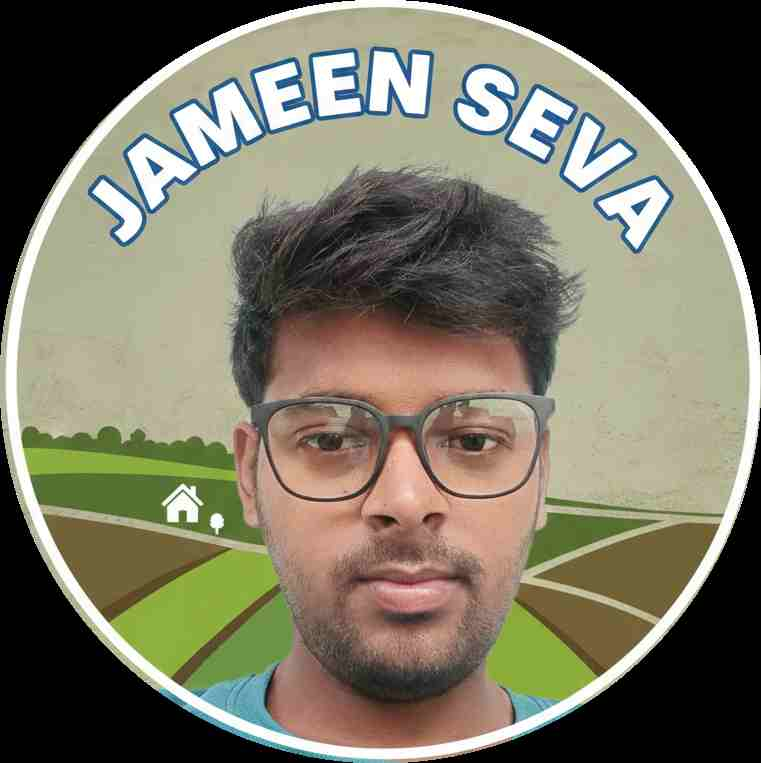

हम बिहार के किसानों और नागरिकों को उनकी जमीन के कागजात आसानी से उपलब्ध कराने में मदद करते हैं।
JameenSeva.in बिहार के किसान भाइयों और जमीन मालिकों के लिए एक भरोसेमंद डिजिटल मंच है। हमारी खासियत यह है कि इस वेबसाइट का संचालन और इसके कैलकुलेटर का निर्माण एक B.Tech इंजीनियर और प्रमाणित अमीन (Certified Amin) द्वारा किया गया है।

Founder & CEO - Jameen Seva
नमस्ते! मैं चन्द्रवीर यादव, बिहार इंजीनियरिंग यूनिवर्सिटी से इलेक्ट्रिकल इंजीनियरिंग ग्रेजुएट हूँ। एक प्रोफेशनल Amin और Content Creator के रूप में मेरा लक्ष्य लोगों को उनकी जमीन के कागजात आसानी से उपलब्ध कराना है। और किसानों को डिजिटल system और service से जोड़ना, ताकि घर बैठे सही और सटीक जानकारी मिले, प्रक्रिया को आसानी से समझे।
हमारा उद्देश्य केवल जानकारी देना नहीं, बल्कि तकनीक (B.Tech Knowledge) और जमीनी अनुभव (Amin Experience) को मिलाकर आपको सटीक 'रकबा' और 'नक्शा' की जानकारी देना है। हम गूगल मैप्स पर भी "Jameen Seva" के नाम से सत्यापित (Verified) हैं।
अक्सर लोगों को पुराना खतियान, वंशावली या जमीन के रिकॉर्ड निकालने में काफी दिक्कतों का सामना करना पड़ता है। JameenSeva.in का उद्देश्य इस प्रक्रिया को सरल और पारदर्शी बनाना है। हम एक प्रोफेशनल टीम हैं जो केवल सुविधा के लिए काम करते हैं। हम रिकॉर्ड प्राप्त करने का सर्विस चार्ज लेते हैं।
सरकारी शुल्क का भुगतान: हम ग्राहकों की ओर से निर्धारित सरकारी पोर्टल पर उचित सरकारी शुल्क (Chalan/Fee) का भुगतान करते हैं। हम जो कुल राशि लेते हैं, उसमें सरकारी शुल्क + हमारा सर्विस चार्ज + कूरियर खर्च शामिल होता है।
हम एक प्रोफेशनल टीम हैं जो सरकारी रिकॉर्ड्स और डिजिटल सेवाओं के माध्यम से आपको सही जानकारी प्रदान करने का प्रयास करते हैं। हम कोई सरकारी संस्था नहीं हैं, बल्कि एक सहायता केंद्र (Service Provider) के रूप में काम करते हैं।